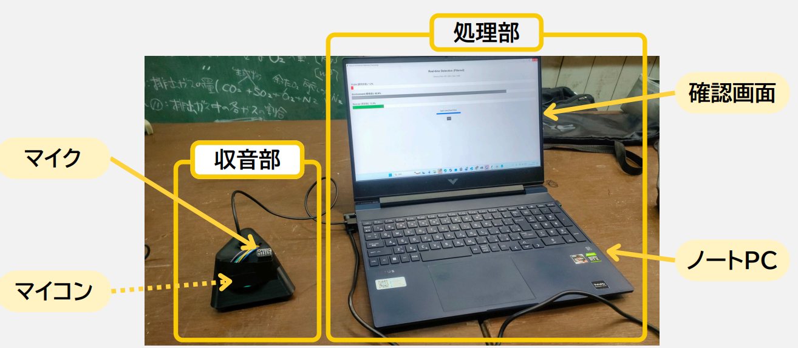
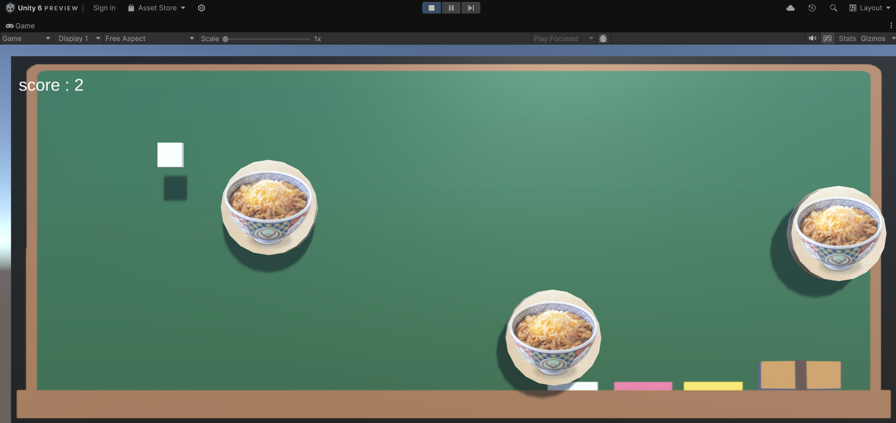
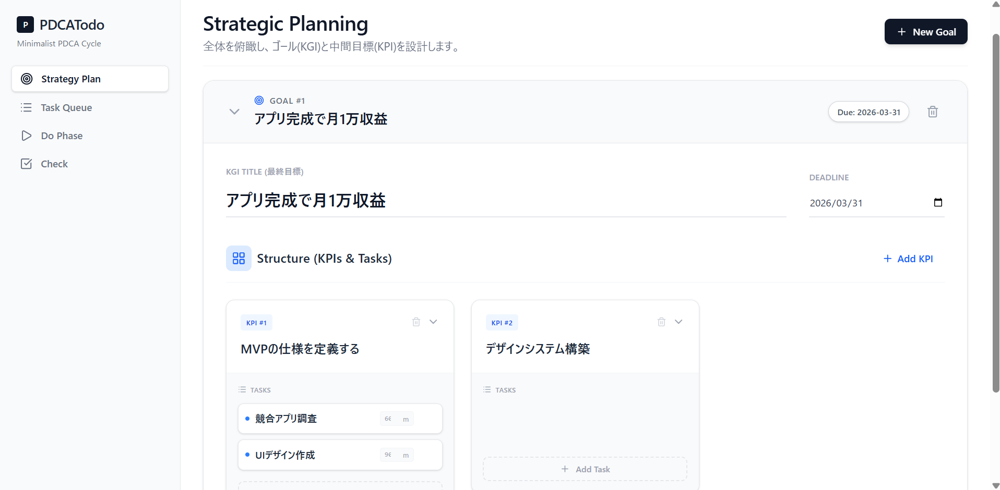

tahought
大阪公立大学工業高等専門学校 知能情報コース 4年
About & Vision
私は現在、広範な技術領域における動作原理の解明と、それらを活用した実践的な課題解決に取り組んでいます。具体的にはAI、Web開発、インフラ構築などの分野において、理論の習得に留まらず、自らプロトタイプを設計・実装することで技術の有効性を検証するプロセスを現在行っています。将来的には、これらの活動を通じて培った技術的な知見を高い次元でサービスへと昇華させ、社会に持続的な価値を提供できるエンジニアを目指しています。
Skills & Expertise
Languages
Frameworks / Tools
Timeline
Now: DCON 2026
Raspberry Piを用いた災害時要救助者発見支援機器の開発。音響認識AIの実装および事業化計画の策定を担当。
2025.07: 東京大学 松尾研究室 DL基礎講座 修了
深層学習の数理モデルおよびPyTorchを用いた実装技術の習得。
2025.03: 高専テクノゼミ 実踐プログラム 修了
梅田地下街の実地調査に基づく、ニーズ別案内ナビゲーションシステムの設計・開発。 Project Detail
Selected Works


Arduino × Unity シューティング
ハードウェア（Arduino）とソフトウェア（Unity）のシリアル通信連携による体感型アプリケーションの開発。

PDCA TODO App
自己管理と生産性向上を目的としたWebアプリケーション。活動データの可視化と振り返り機能を実装。
View Repository →Appendix
課外活動：水泳部
競泳、水球、およびシンクロ（アーティスティックスイミング）の3種目に従事しています。技術の習得だけでなく、チームとしての調和を追求する姿勢を大切にしています。
演技映像を表示 (YouTube)